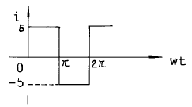
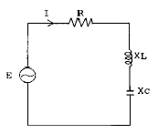
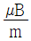
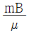
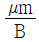
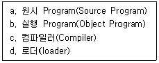
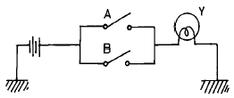
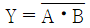
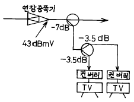

방송통신기능사 (2002-10-06 기출문제)
1과목: 임의 구분
1. 기전력이 다른 전지를 병렬로 연결하면 어떤한 현상이 일어나는가?
- 전압이 증가되고 전류가 증가한다.
- 순환 전류로 인하여 기전력이 감쇠된다.
- 역기전력을 막는 역전류가 생겨서 전압이 증가한다.
- 누설 전류로 인하여 합성전류가 증가한다.
(정답률: 알수없음)

2. 어떤 저항에 10[A]의 전류를 흘리면 20[W]의 전력이 소비되었다. 이 저항에 20[A]의 전류를 흘리면 소비전력은 얼마인가?
- 100[W]
- 20[W]
- 40[W]
- 80[W]
(정답률: 알수없음)
3. 그림과 같은 파형의 전류에 대한 실효값은?

- 5/3 [A]
- 5/2 [A]
- 5 [A]
- 5√2 [A]
(정답률: 알수없음)
4. 자체 인덕턴스 20[mH]의 코일에 60[㎐]의 전압을 가할 때 유도리액턴스 크기는 대략 얼마인가?
- 1200[Ω]
- 0.13[Ω]
- 13[Ω]
- 7.54[Ω]
(정답률: 알수없음)
5. R = 4[Ω], XL = 8[Ω], XC = 4[Ω]인 RLC 직렬회로에서 전압과 전류의 위상관계는?

- 전압이 전류보다 위상이 π/4(rad)앞선다.
- 전류가 전압보다 위상이 π/4(rad)앞선다.
- 전압이 전류보다 위상이 π/3(rad)앞선다.
- 전류가 전압보다 위상이 π/3(rad)앞선다.
(정답률: 알수없음)
6. 투자율 μ, 자속밀도 B[㏝/m2]의 자장 중에서 m[㏝]의 자극이 받는 힘[N]은?
- μmB



(정답률: 알수없음)
7. 0.1[V]의 교류 입력이 10[V]로 증폭되었을때 증폭도는 몇 [㏈]인가?
- 0.1[㏈]
- 4[㏈]
- 20[㏈]
- 40[㏈]
(정답률: 알수없음)
8. 수정발진기가 안정된 발진을 지속하기 위하여 수정임피이던스는 어떤 상태가 되어야 하는가?
- 저항성
- 유도성
- 용량성
- 확산성
(정답률: 알수없음)
9. 주파수 변조를 진폭변조에 비교할 경우 옳지 않는 것은?
- 점유 주파수 대역폭이 넓어진다.
- 초단파대의 통신에 적합하다.
- S/N비가 좋다.
- 에코(echo)의 영향이 많다.
(정답률: 알수없음)
10. 다음 중 사실과 다른 것은?
- 유효전력 P = EI cos 읨
- 무효전력 Pr = EI sin 읨
- 피상전력 Pa = P2 + Pr2
- 피상전력 ≤ 유효전력 + 무효전력
(정답률: 알수없음)
11. LC 발진 회로에서 L = 200[μH], C = 200[㎊]이면 발진 주파수 fo는?
- 400[㎑]
- 455[㎑]
- 600[㎑]
- 800[㎑]
(정답률: 알수없음)
12. B급 푸시풀 증폭회로에서 일그러짐(왜율)이 작아지는 이유는?
- 짝수 고조파 성분이 서로 상쇄되기 때문에
- 홀수 고조파 성분이 서로 상쇄되기 때문에
- 짝수,홀수 고조파 성분이 서로 상쇄되기 때문에
- 증폭효율이 높기 때문에
(정답률: 알수없음)
13. 컬렉터 변조시 피변조 트랜지스터의 동작은?
- A급동작
- B급동작
- C급동작
- AB급동작
(정답률: 알수없음)
14. 다음 중 유도현상에 생기는 유도 기전력의 법칙으로 자속의 변화를 방해하려는 방향으로 발생하는 법칙은?
- 렌츠의 법칙
- 비오-사바아르의 법칙
- 패러데이의 법칙
- 플레밍의 오른손 법칙
(정답률: 알수없음)
15. 반도체의 다수캐리어로 옳게 짝지어진 것은?
- P형의 정공, N형의 전자
- P형의 정공, N형의 정공
- P형의 전자, N형의 전자
- P형의 전자, N형의 정공
(정답률: 알수없음)
16. 중앙처리장치(CPU)의 운영 프로그램이 위치하고 있는 기억장치는?
- 연산 장치
- 주기억 장치
- 제어 장치
- 보조기억 장치
(정답률: 알수없음)
17. A레지스터의 내용이 (01101)이고, B레지스터의 내용이 (10001)였다. A레지스터와 B레지스터의 내용이 논리적으로 OR 연산이 되었다면 그 결과는?
- 01101
- 00001
- 11101
- 10001
(정답률: 알수없음)
18. 다음 중 미국 벨 연구소에서 개발된 고급프로그램 언어이며, UNIX 운영체계의 중심 언어는?
- FORTRAN
- ALGOL
- ADA
- C
(정답률: 알수없음)
19. 다음 4개의 사항들 중 프로그램 실행 순으로 맞게 나열된 것은?

- b - c - d – a
- a - c - b - d
- c - d - a – b
- b - d - c - a
(정답률: 알수없음)
20. 16진수 (3B4)16을 2진수로 고치면?
- 11101101002
- 11011011002
- 11010111002
- 11110101002
(정답률: 알수없음)
2과목: 임의 구분
21. 중앙처리장치의 기능으로 적당하지 못한 것은?
- 조작원과의 대화
- 데이타의 기억
- 컴퓨터의 각 장치의 동작을 제어
- 정보의 산술 및 논리연산
(정답률: 알수없음)
22. 그림의 출력은?

- Y = A + B
- Y = A ⦁ B
- Y = A - B

(정답률: 알수없음)
23. 전자계산기를 세대별로 나눌 때 제2세대와 제4세대로 맞게 짝지어진 것은?
- 진공관 - 트랜지스터
- 트랜지스터 - 고밀도 집적회로
- 진공관 - 집적회로
- 집적회로 - 초고밀도 집적회로
(정답률: 알수없음)
24. 동시에 두 개 이상의 프로그램을 컴퓨터에 로드시켜 처리하는 방법을 무엇이라 하는가?
- Multiusing
- Multiprocessing
- Multiaccessing
- Multiprogramming
(정답률: 알수없음)
25. 연산결과가 양수(0) 또는 음수(1)인지, 자리올림(carry)이나 넘침(overflow)이 발생했는가를 표시하는 레지스터는?
- 누산기
- 데이터레지스터
- 상태레지스터
- 가산기
(정답률: 알수없음)
26. 데시벨[㏈]을 단위로 쓰는 것이 아닌 것은?
- 신호대 잡음비(S/N비)
- 감쇠량
- 통화레벨
- 트래픽 량
(정답률: 알수없음)
27. 광케이블에 의한 광통신 방식의 특징이 아닌 것은?
- 저 손실 특성
- 전력유도를 받지 않음
- 전반사 현상 이용
- 대역폭이 좁다.
(정답률: 알수없음)
28. 광 CATV 전송방식 중 전송거리가 가장 짧은 방식은?
- AM 광전송방식
- FM 광전송방식
- 디지탈 광전송방식
- PCM 광전송방식
(정답률: 알수없음)
29. 동축 CATV 시스템에서 전송시설의 상태감시 및 레벨을 안정시키기 위해 표준신호를 발생시키는 기기는?
- 경보신호발생기(pilot generator)
- 신호처리기(signal processor)
- 채널증폭기(channel AMP)
- 변조기(Modulator)
(정답률: 알수없음)
30. 비월주사 방식을 사용하는 우리나라 텔레비젼 방식에서 수평주사 톱니파의 주파수는 몇 [㎐]인가?
- 525
- 625
- 13250
- 15750
(정답률: 알수없음)
31. CATV 시스템중 안테나에서 수신된 공중파 방송신호와 프로그램을 송출하기 위한 자가방송신호를 송출하기 전까지의 설비를 무엇이라고 하는가?
- 헤드엔드
- 수신설비
- 조정실설비
- 방송송출설비
(정답률: 알수없음)
32. 다음 중 무선 CATV 방식이 아닌 것은?
- MMDS
- LMDS
- MMCS
- LMCS
(정답률: 알수없음)
33. 광통신시스템에서 사용하는 광소자가 아닌 것은?
- LD
- LED
- APD
- LNA
(정답률: 알수없음)
34. 양방향 CATV 시스템에서 높은 대역의 순방향 신호와 낮은 대역의 역방향 신호를 분리하여 주는 기능을 갖고 있는 장치는?
- 다이플렉서 필터
- 변조기
- 복조기
- 혼합기
(정답률: 알수없음)
35. 방송국에서 사용하는 VTR의 종류에 포함되지 않는 것은?
- U – Matic
- β - CAM
- VHS
- ENG
(정답률: 알수없음)
36. 상향 신호에는 헤드엔드(Head-End)로의 유합잡음이 발생하게 되는데 이에 대한 방지책이 아닌 것은?
- 증폭기의 수량을 최대한 늘린다.
- 분기기, 분배기, 탭오프 등의 유휴단자를 종단시키다.
- 차폐특성이 뛰어난 케이블을 사용한다.
- 전송로상에서 불요파가 혼입되지 않도록 한다.
(정답률: 알수없음)
37. 지상파 TV 방송은 주로 어느 주파수대역을 이용하는가?
- 장파(LF)∼중파(MF)대역
- 중파(MF)∼단파(HF)대역
- 초단파(VHF)∼극초단파(UHF)대역
- 극초단파(UHF)∼초극초단파(SHF)대역
(정답률: 알수없음)
38. 색의 3요소 중 주파수의 변화에 따라 변하는 것은?
- 색상
- 채도
- 포화도
- 휘도
(정답률: 알수없음)
39. 컨버터의 기능이 아닌 것은?
- 채널변환
- 디스크램블 기능
- 신호분리 기능
- 원격제어 기능
(정답률: 알수없음)
40. CATV의 주전송설비중 센터계에 해당되지 않는 것은?
- 스튜디오 설비
- Head-End 장치
- 공중파 수신설비
- 광분기기
(정답률: 알수없음)
3과목: 임의 구분
41. 다음 연장증폭기의 출력레벨이 43[㏈㎷]일 경우 컨버터 입력레벨은? (단, 케이블손실은 무시한다.)

- 39.5[㏈㎷]
- 36.7[㏈㎷]
- 32.5[㏈㎷]
- 25.7[㏈㎷]
(정답률: 알수없음)
42. 송신안테나에서 발사된 전파의 전파통로가 달라 수신안테나에 도달하는 시간이 약간씩 달라 같은 신호가 여러번 되풀이하여 나타나는 현상을 무엇이라고 하는가?
- 페이딩현상
- 에코우현상
- 간섭현상
- 회절현상
(정답률: 알수없음)
43. 방송전송선로의 측정기로 거의 사용하지 않는 것은?
- 스펙트럼 분석기
- 레벨메타
- IC 테스터
- 전계강도 측정기
(정답률: 알수없음)
44. 다음 중 야기(Yagi)안테나의 특징이 아닌 것은?
- TV수신용 및 고정 통신용에 사용된다.
- 도파기의 수를 늘리면 이득이 작아진다.
- 이득이 높은 안테나를 구성할 수 있다.
- 반사기나 도파기를 잘 이용하면 예민한 지향 특성을 얻을 수 있다.
(정답률: 알수없음)
45. 다음 중 칼라 영상 신호의 위상을 측정하는데 필요한 장치는?
- 레벨메타
- TV패턴 발생기
- 벡터스코프
- 스펙트럼분석기
(정답률: 알수없음)
46. 전송망사업자에 관한 내용중 틀리는 것은?
- 전송망사업을 하고자 하는자는 정보통신부장관의 등록을 받아야 한다.
- 종합유선방송국은 전송망사업자가 설치한 전송선로시설을 이용하여야 한다.
- 설치한 전송선로시설은 기술기준에 적합한지 여부에 대하여 공보처장관의 확인을 받아야 한다.
- 전송선로시설의 이용료 기타 이용조건에 관한 약관을 정하여야 한다.
(정답률: 알수없음)
47. 위성방송사업을 하고자 하는 자는 누구의 추천을 받아 허가 신청을 하여야 하는가?
- 방송위원회
- 정보통신부장관
- 방송기술인협회
- 문화관광부장관
(정답률: 알수없음)
48. 전기통신설비의 기술기준에 관한 다음 설명중 틀린 것은?
- 저주파라 함은 300[Hz]미만의 전자파를 말한다.
- 음성주파라 함은 300[Hz]이상 3400[Hz]이하의 전자파를 말한다.
- 가청주파라 함은 10[Hz]이상 5000[Hz]이하의 전자파를 말한다.
- 고주파라 함은 3400[Hz]이상의 전자파를 말한다.
(정답률: 알수없음)
49. 종합유선방송국의 채널별 주파수대역중 상향대역에 해당하는 것은?
- 2[MHz]∼20[MHz]
- 5.75[MHz]∼41.75[MHz]
- 88[MHz]∼108[MHz]
- 120[MHz]∼132[MHz]
(정답률: 알수없음)
50. 정보통신공사업법령에서 정하고 있는 공사의 종류를 크게 구분할 때 해당되지 않는 것은?
- 통신설비공사
- 방송설비공사
- 단말기기공사
- 정보설비공사
(정답률: 알수없음)
51. 종합유선방송 구내전송선로의 설비공사를 완료한 공사업자는 당해 설비공사에 대하여 누구의 준공검사를 받아야 하는가?
- 문화관광부장관이 정하는 바에 따라야 한다.
- 방송위원회 위원장이 정하는 바에 따라야 한다.
- 종합유선방송공사협회장이 정하는 바에 따라야 한다.
- 정보통신부장관이 정하는 바에 따라야 한다.
(정답률: 알수없음)
52. 종합유선 방송을 수신하기 위하여 수신자가 설치하는 선로, 관로, 분배기등과 그 부대설비를 무엇이라 하는가?
- 분배기
- 구내전송선로설비
- 분기기
- 방향성 결합기
(정답률: 알수없음)
53. 기간통신사업자가 공중선과 그 부속 설비를 설치하기 위하여 토지등의 사용에 관한 내용으로 틀리는 것은?
- 소유자, 점유자에게 통보만하고 사용할 수 있다.
- 토지일시 사용은 6개월을 초과할수 없다.
- 토지의 사용 협의를 할 수 없는 경우에는 토지수용법이 정하는 바에 의하여 사용할 수 있다.
- 국.공유의 토지 등도 일시 사용할 수 있다.
(정답률: 알수없음)
54. 방송에서 변조전의 정보를 포함하고 있는 주파수대역을 무엇이라고 하는가?
- 기저대역
- 방송대역
- 통과대역
- 전송대역
(정답률: 알수없음)
55. 구내전송선로설비의 유휴 분기 및 분배 단자의 처리로서 적합한 방법은?
- 45[Ω] 종단기로 종단시킨다
- 50[Ω] 종단기로 종단시킨다
- 75[Ω] 종단기로 종단시킨다
- 100[Ω] 종단기로 종단시킨다
(정답률: 알수없음)
56. 다음의 보기에서 방송사업 또는 전송망사업을 할 수 없는 자는?
- 국가
- 법인
- 외국인
- 지방자치단체
(정답률: 알수없음)
57. 텔레비전 방송을 행하는 송신공중선에서 발사전파의 편파면은?
- 수직편파
- 수평편파
- 나선편파
- 타원형편파
(정답률: 알수없음)
58. 방송의 공적 책임 및 공정성과 공공성을 실현하고, 방송내용의 질적 향상을 도모하기 위해 설립한 기구는?
- 방송위원회
- 시청자위원회
- 언론중재위원회
- 방송중재위원회
(정답률: 알수없음)
59. 무선설비와 무선설비를 조작하는 자의 총체를 나타낸 것은?
- 시설자
- 무선국
- 무선전신
- 무선종사자
(정답률: 알수없음)
60. 지상파 디지털 텔레비전 방송신호의 변조된 신호의 채널당 주파수 대역폭은?
- 1[MHz]
- 4[MHz]
- 6[MHz]
- 12[MHz]
(정답률: 알수없음)